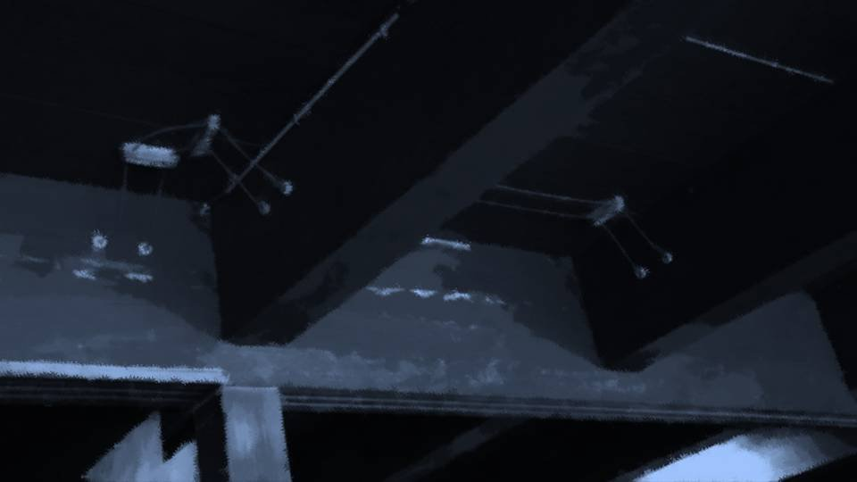

The Trumpeter of the Apocalypse ~Wandering~

The dusty, musty storehouse had turned into a giant box that reeked of char.
The first floor hadn't burned. As expected, the second floor was badly burned out.
The area around the books had burned especially badly.
Someone had set fire to the books directly.
The first floor hadn't burned. As expected, the second floor was badly burned out.
The area around the books had burned especially badly.
Someone had set fire to the books directly.
Chiga-nee's memo and the many books had burned, and Chiga-nee's phone was no longer usable either.
If I'd known this would happen, I'd have taken pictures.
Now Chiga-nee's information remains only in my memory.
If I'd known this would happen, I'd have taken pictures.
Now Chiga-nee's information remains only in my memory.

"Eri-nee, I walked Natsumi-chan back."
"Thanks. How was she?"
"She was scared, like we thought..."
"I see..."
Kogori-senpai's nerves must be close to their limit by now.
Maybe I should call off today's search and go back to the room too...
"Thanks. How was she?"
"She was scared, like we thought..."
"I see..."
Kogori-senpai's nerves must be close to their limit by now.
Maybe I should call off today's search and go back to the room too...
"Do you think they'll hold the thirteenth-year memorial service tomorrow?"
"Hmm, not sure... I think Grandma will probably decide tomorrow morning."
A disappearance, a fire, the trees gone wrong―everything really does make you think of the end of the world.
I feel bad for Niimura-senpai's father, but this is no time to be holding the thirteenth-year memorial service...
"Hmm, not sure... I think Grandma will probably decide tomorrow morning."
A disappearance, a fire, the trees gone wrong―everything really does make you think of the end of the world.
I feel bad for Niimura-senpai's father, but this is no time to be holding the thirteenth-year memorial service...
Niimura-senpai...?
No, wait a minute―what about Niimura-senpai and Obasan!?
No matter how you look at it, they're way too late getting back...!
It's been more than two hours since they set out.
No, wait a minute―what about Niimura-senpai and Obasan!?
No matter how you look at it, they're way too late getting back...!
It's been more than two hours since they set out.

There was no reply on my phone either.
I tried calling, but again there was no answer.
Has something gone wrong after all?
I tried calling, but again there was no answer.
Has something gone wrong after all?
"Kana-chan! Where's the cave Niimura-senpai went to!? Show me!"
"Where Haruka-chan went? Now that you mention it, she's way too late getting back...!"
"Right!? Something must have happened, don't you think!?"
"G-got it! Let's hurry!"
"Wait! We're taking Kogori-senpai too! Go get her, please!"
"Y-yes!"
"Where Haruka-chan went? Now that you mention it, she's way too late getting back...!"
"Right!? Something must have happened, don't you think!?"
"G-got it! Let's hurry!"
"Wait! We're taking Kogori-senpai too! Go get her, please!"
"Y-yes!"
There are two reasons for taking Kogori-senpai along.
One is so that Kogori-senpai isn't left alone any longer.
And the other is to use her as a feint against Shigatsu Youka.
If Shigatsu Youka is hijacking Kogori-senpai's five senses, then this way Shigatsu Youka can be deceived too.
One is so that Kogori-senpai isn't left alone any longer.
And the other is to use her as a feint against Shigatsu Youka.
If Shigatsu Youka is hijacking Kogori-senpai's five senses, then this way Shigatsu Youka can be deceived too.
Besides, Niimura-senpai went looking for the mummy, and Shigatsu Youka should know that too.
If we're heading to the same place, there's no point hiding it.
It's no different from keeping Kogori-senpai deceived, but it can't be helped.
If we're heading to the same place, there's no point hiding it.
It's no different from keeping Kogori-senpai deceived, but it can't be helped.


"Eri-nee! I brought her!"
"Goto, you're letting me help too!?"
"Yes! We're going to search for Niimura-senpai and Obasan!"
"Then just Kana-chan and I will go there! Goto, shouldn't you be looking into the storehouse!?"
Senpai...! Making unnecessary suggestions at a time like this...!
"Goto, you're letting me help too!?"
"Yes! We're going to search for Niimura-senpai and Obasan!"
"Then just Kana-chan and I will go there! Goto, shouldn't you be looking into the storehouse!?"
Senpai...! Making unnecessary suggestions at a time like this...!
"No! We have to go, all three of us...!"
"Natsumi-chan! Right now you should do what Eri-nee says!"
"O-okay..."
Nice follow-up, Kana-chan!
In that case, no time like the present. We have to get to that underground place quickly.
"Natsumi-chan! Right now you should do what Eri-nee says!"
"O-okay..."
Nice follow-up, Kana-chan!
In that case, no time like the present. We have to get to that underground place quickly.

"It's about 10 minutes into this forest."
"The trees are almost all dead..."
"They weren't like this a little while ago..."
"Kogori-senpai, this is apparently the work of Necro―Shigatsu Youka, a fungus that covers this whole area. It seems to strip this mountain of its nutrients, root and all."
"Shigatsu Youka...?"
"The trees are almost all dead..."
"They weren't like this a little while ago..."
"Kogori-senpai, this is apparently the work of Necro―Shigatsu Youka, a fungus that covers this whole area. It seems to strip this mountain of its nutrients, root and all."
"Shigatsu Youka...?"
That's as much information as I can give Kogori-senpai.
I can't tell her yet about the Fierce Sound, or about the disguise as cherry trees.
I'll tell her only about the ecology, to clear up at least some of Kogori-senpai's questions, and keep Shigatsu Youka's purpose to myself.
Of course, I can't mention the sense-hijacking either.
I'll give Kogori-senpai information right up to the line, and no further.
This also serves to mislead Shigatsu Youka about where the limit of what we know lies.
I can't tell her yet about the Fierce Sound, or about the disguise as cherry trees.
I'll tell her only about the ecology, to clear up at least some of Kogori-senpai's questions, and keep Shigatsu Youka's purpose to myself.
Of course, I can't mention the sense-hijacking either.
I'll give Kogori-senpai information right up to the line, and no further.
This also serves to mislead Shigatsu Youka about where the limit of what we know lies.

"Wait!"
Suddenly Kana-chan stepped in front of us.
Then, holding her breath, she watched our surroundings intently.
Suddenly Kana-chan stepped in front of us.
Then, holding her breath, she watched our surroundings intently.

"What's wrong?"
"Quiet...
Someone's there."
"Could it be Niimura-senpai?"
With that, Kana-chan took a knife in each hand.
"Could it be Niimura-senpai?"
With that, Kana-chan took a knife in each hand.

"Who's there!? You're there, aren't you!? Come out!"
When Kana-chan, knives raised, shouted at the top of her voice―
When Kana-chan, knives raised, shouted at the top of her voice―

From behind trees and out of the dead grass, people in Noh masks and red robes crept into view.
The big moon in the sky lit the nata and maces in their hands.
The big moon in the sky lit the nata and maces in their hands.
"What? These people..."
"Probably people from the settlement..."
Residents of the Arata settlement...!? What? What's with these creepy outfits...!
No, these outfits―
"Probably people from the settlement..."
Residents of the Arata settlement...!? What? What's with these creepy outfits...!
No, these outfits―
These are the Noh masks and red robes, the nata and the maces that Sakura-san sent Niimura-senpai's mother 10 years ago.
Add Droga, and you have everything used in the Megasawa City case.
Add Droga, and you have everything used in the Megasawa City case.
"Kana. Our guests. Turn back at once. You must not go beyond this point."
"Move! I have to find Haruka-chan!"
The residents showed no sign of flinching, even at Kana-chan's menace.
Athletic or not, a little kid like Kana-chan taking on adults is reckless...!
"Move! I have to find Haruka-chan!"
The residents showed no sign of flinching, even at Kana-chan's menace.
Athletic or not, a little kid like Kana-chan taking on adults is reckless...!
"Eri-nee! Natsumi-chan! Get behind me!"
But we weren't any more used to this kind of situation than Kana-chan was.
I pulled Kogori-senpai by the arm and stepped back behind Kana-chan.
What are these people after?
If we back off, will they leave us alone?
But we weren't any more used to this kind of situation than Kana-chan was.
I pulled Kogori-senpai by the arm and stepped back behind Kana-chan.
What are these people after?
If we back off, will they leave us alone?
But Niimura-senpai and Obasan should be somewhere up ahead.
If these people have done something to Niimura-senpai or Chiga-nee...
This settlement really isn't of one mind.
The fire just now, too. Burning that can't be read as the residents' united will.
If these people have done something to Niimura-senpai or Chiga-nee...
This settlement really isn't of one mind.
The fire just now, too. Burning that can't be read as the residents' united will.
"Mm... Everyone, wait!"
A shout I recognized came from a different direction than the residents.

"Sis...!"
"Chiga-nee!"
"............ Who's that?"
"Chiga-nee!"
"............ Who's that?"
Read ✓ Next in this arc →